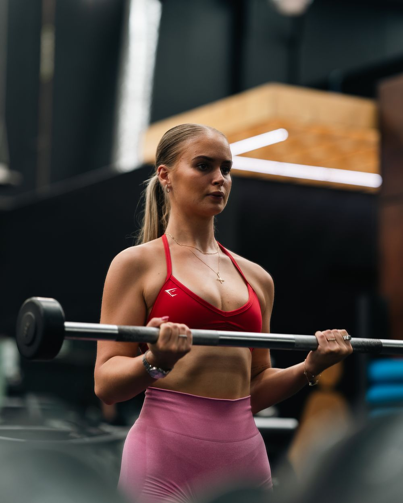

Performance Nutritionist & Coach
Sammi
Sammi spent 18 years as a dancer and 10 of those competing at an elite level, so she knows what it takes to perform when your body and mind are both under pressure. She also knows what happens when you’re asking a lot of your body without knowing how to properly fuel or train it.
When she retired from dance, she studied sport nutrition and became a qualified personal trainer so she could help women avoid the mistakes she’d made. She has since completed Performance Nutrition Levels 1–3 and Performance PT Levels 1–3 through Clean Health.
Today Sammi works with women who perform at a high level, whether that’s in business, their career or both. These women are used to showing up for everyone else, and their own health is usually the first thing to slip.
Her coaching gives you a plan that works and also fits your goals, your schedule and the way you actually live. She focuses on building habits that last, works through the beliefs that have kept you stuck, and makes sure you understand the “why” behind every decision so you’re never just following a plan blindly.
Her approach is holistic, covering health, fitness and overall wellbeing. That’s why her clients get stronger, feel good in their bodies, and say the change in how they feel mentally matters just as much as the physical results.
- 18 years
- as a dancer
- 10 years
- competing at an elite level
- Nutrition
- Accredited Sports Nutritionist
- Training
- Qualified Personal Trainer